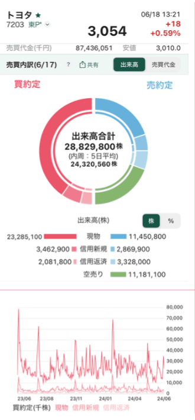
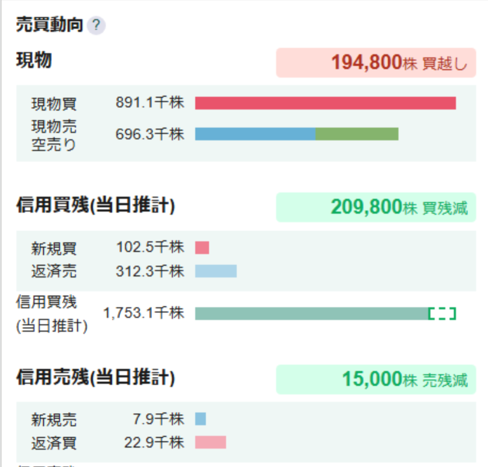

その急騰・急落、実は仕掛け？松井証券アプリの売買分析で空売り・信用残高が丸裸に
株価が突然大きく動いたとき、「これは個人投資家の動きなのか、それとも機関投資家や大口投資家が絡んでいるのか」気になったことはありませんか。実は、この疑問に答えるヒントが、松井証券の日本株アプリの中に眠っています。
東証のデータを使った「売買分析」機能とは
松井証券は2024年、東証上場の全銘柄について信用残高を取引当日に確認できる仕組みを提供開始しました。2025年には、東証の売買内訳データを使った分析機能をスマートフォンアプリ・PCツール(ネットストック・ハイスピード、マーケットラボ)の両方に拡張し、信用残高・信用倍率の推移を、これまで以上に詳しく確認できるようになっています。このPC対応の分析機能は、松井証券自身が「ネット証券業界初」と発表しているものです。


その急騰、実は"仕掛け"かもしれない
株価が理由もなく急騰・急落しているように見えるとき、実は空売りの増減や信用取引の残高変化が背景にあることも少なくありません。「売買分析」機能を使えば、気になる銘柄の信用残高・信用倍率の推移をグラフで確認でき、値動きの裏側にある需給の変化を読み解く手がかりが得られます。
使い方(概要)
アプリ内の銘柄ページから「売買分析」の画面に進むと、信用残高・信用倍率の推移がグラフで表示されます。気になる銘柄を検索すれば、そのまま確認できます。
画面上の具体的な操作手順(タップする場所など)は、実際の画面キャプチャを確認した上で、より正確な内容に更新します。
まとめ
ニュースや業績だけでは見えてこない、需給面からの値動きの手がかり。気になる方は、松井証券アプリの詳細を以下からチェックしてみてください。
松井証券アプリの詳細はこちら